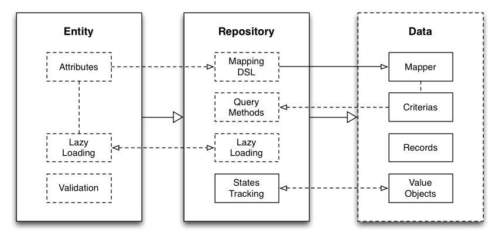

Leaving Rails
is the grass really greener?
hi there
my name is James
i'm making forrest.io
who here loves ping pong?
topics
web frameworks
persistence layer patterns
about Rails...
about magic
Arthur Clarke: “Any sufficiently advanced technology is indistinguishable from magic.”
Robert Carlyle: “All magic comes with a price.”
APIs
- are fun
- resources
- versioning
- content negotiation
just do it
web as a platform

third party integrations

consider your architecture
but, buyer beware
building APIs with Rails
look ma, no hands!
$ rails new blog
$ rails g scaffold Article title:string body:text
hold on!
mixed content types
class ArticleController < ApplicationController
def index
@articles = Article.all
respond_to do |format|
format.html
format.json { render json: @articles }
end
end
def show
@article = Article.find(params[:id])
respond_to do |format|
format.html
format.json { render json: @article }
end
end
end
makes baby jesus cry
overkill
$ rake middleware
use ActionDispatch::Static
use Rack::Lock
use #<ActiveSupport::Cache::Strategy::LocalCache::Middleware:0x007f99758cbf70>
use Rack::Runtime
use Rack::MethodOverride
use ActionDispatch::RequestId
use Rails::Rack::Logger
use ActionDispatch::ShowExceptions
use ActionDispatch::DebugExceptions
use ActionDispatch::RemoteIp
use ActionDispatch::Reloader
use ActionDispatch::Callbacks
use ActiveRecord::ConnectionAdapters::ConnectionManagement
use ActiveRecord::QueryCache
use ActionDispatch::Cookies
use ActionDispatch::Session::CookieStore
use ActionDispatch::Flash
use ActionDispatch::ParamsParser
use ActionDispatch::Head
use Rack::ConditionalGet
use Rack::ETag
use ActionDispatch::BestStandardsSupport
run RailsMiddleware::Application.routes
what about Rails::API?
enter

example
class Blog::API < Grape::API
format :json
resource :articles do
get do
Article.all
end
get :id do
Article.find(params[:id])
end
end
end
run Blog::API
features
- versioning
- parameters (incl. validation and coercion)
- headers
- routes
- cookies
- redirects
- exception handling
- logging
- response serialisation (incl. JSONP and CORS)
- grape-entity
- authentication
grape-related gems
- grape-entity
- grape-entity-matchers
- grape-rabl
- newrelic-grape
- grape-librato
- grape_documenter
- grape-swagger
- grape-swagger-ui
- grape-swagger-rails
- grape_sinatra_helpers
- grape-jbuilder
persistence layer patterns
- activerecord
- repository
activerecord pattern

what would DHH do?
it works
in theory...
too many responsibilities
this is an example of an "idiomatic" approach to an ActiveRecord model
class Model < ParentModel
include Foo::Bar
extend Bar::Baz
acts_as_authentic
dsl_specific_flags
module InternalModule
...
end
default_scope :order => 'id ASC'
belongs_to :foo
has_one :baz
has_many :bars
has_many :maz, :through => :daz
has_and_belongs_to_many :jaz
serialize :bars, Hash
...
before_validation :foo
after_validation :bar
before_save :baz
before_create :taz
after_create :daz
after_save :maz
after_commit :laz
...
validates_presence_of :id
validates_uniqueness_of :id
validates_inclusion_of :rating, :in => [1..10]
validates_numericality_of :taz
...
accepts_nested_attributes_for :foobar
scope :by_name, :order => 'name ASC'
scope :lambda_scope, :lambda => { |lambda| { ... } }
...
attr_reader :foobaz
attr_accessor :foobar
delegate :barbaz, :to => :foo
...
def self.class_method
end
def instance_method
end
protected
def self.class_method
end
def instance_method
end
private
def self.class_method
end
def instance_method
end
end
tests hit the database
class Article < ActiveRecord::Base
has_many :comments
validates_presence_of :title
validates_uniqueness_of :slug
end
Benchmark.measure { 1000.times { Article.new(title: 'Hello World').valid? } }.total
# => 2.73 seconds
class Article < ActiveRecord::Base
has_many :comments
validates_presence_of :title
end
Benchmark.measure { 1000.times { Article.new(title: 'Hello World').valid? } }.total
# => 1.41 seconds
schema drives the model
class CreateArticlesTable < ActiveRecord::Migration
def change
create_table :articles do |t|
t.string :title
t.string :slug
t.text :body
t.boolean :published
end
end
end
class Article < ActiveRecord::Base
end
puts Article.new.inspect
# => <Article id: nil, title: nil, slug: nil, body: nil, published: nil>
no light at the end of this tunnel
repository pattern
single responsibility
class Article < Repository::Entity
attr_accessible :title, :slug, :body, :published
validates_presence_of :title, :slug, :body
end
class ArticleRepository < Repository
repository_for Article
validates_uniqueness_of :slug
end
article = Article.new title: 'Hello World', slug: 'hello-world', body: 'pending'
puts article.id # => nil
ArticleRepository.save(article)
puts article.id # => 1
article.published = true
ArticleRepository.update(article)
puts ArticleRepository.find(article.id).published # => true
ArticleRepository.destroy(article)
puts article.id # => nil
test in isolation
class Article < Repository::Entity
attr_accessible :title, :slug, :body, :published
validates_presence_of :title, :slug, :body
end
class ArticleRepository < Repository
repository_for User
validates_uniqueness_of :slug
end
article = Article.new title: 'Hello World', slug: 'hello-world', body: 'pending'
article.valid? # => true
ArticleRepository.save(article)
article.valid? # => false (slug is dup of previous example)
model is the source of truth
class Article < Repository::Entity
attr_accessible :title, :slug, :body, :published
end
puts Article.new.inspect
# => <Article id: nil, title: nil, slug: nil, body: nil, published: nil>
(could use a gem like virtus to manage the attributes)
Ruby implementations
- most popular (274 stars, 7.5K downloads)
- only support Mongo and Riak
- nicest syntax
- doesn't support associations (see CHANGELOG.md)
- doesn't support intelligent scopes
- supports associations (via minimapper-extras)
- supports scope methods in a Mapper class
- entity classes inherit from ActiveRecord::Base